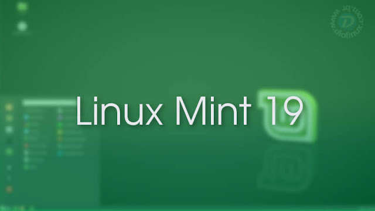

Os desenvolvedores do Linux Mint fizeram um ótimo post em seu blog oficial para falar sobre as futuras implementações do sistema. Muito se espera do Linux Mint, já que nos últimos anos ele virou sinônimo de equilíbrio entre estabilidade e facilidade de uso. Confira agora as novidades que nos aguardam:

Os desenvolvedores do Linux Mint iniciaram o ano agradecendo a colaboração dos patrocinadores do projeto e dos doadores. segundo eles, o último mês teve um record de novos contribuidores e um record de arrecadação, o que é bom para todos nós, pois dá um "gás" a mais para que o time trabalhe. Grande parte do foco do Linux Mint, inicialmente, é melhorar o processo de desenvolvimento da distro, tornando-o mais eficiente, com ferramentas que automatizam o processo da caça de bugs em implementações novas de código.
Eu sei que todos estão esperando as grandes atualizações que saltam aos olhos, especialmente uma revitalizada no visual da distro, mas até o momento nada sobre isso foi comentado. Tudo bem o ciclo está apenas no início e o novo Mint, que sairá somente perto da metade de ano sob o codinome de Tara, ainda deve trazer muitas coisas interessantes. Dentre as coisas que já sabemos que vão começar a fazer parte da nova edição do Linux Mint e estão sendo testadas em imagens alpha que apenas a equipe de desenvolvimento acessa nessa etapa do projeto estão a migração para o GTK 3.22, que é uma versão "antiga" mas muito estável. Outras novidades impactam diretamente a interface Cinnamon, padrão da distro. Agora o ambiente gráfico migrará em definitivo e completamente do Python 2.x para o 3.x, migrará do mozjs38 para o mozjs52 e incluirá também a possibilidade de configurar data e hora via rede através do Systemd.
Outro ponto importante comentado foi a postura de mitigação de bugs no sistema. Segundo os devs, são milhares de problemas relatados e quanto mais o sistema se populariza, mais pessoas utilizam o Mint em circunstâncias diversas e em hardwares diversos também, e maior fica a quantidade de problemas relatados. No último ciclo, 18.x, do Linux Mint, os desenvolveres teriam coletado cerca de 7.500 bugs, a maior parte reportados pelos próprios usuários, somando GitHub e Launchpad. Boa parte desses bugs foram considerados "simples de resolver" e a ideia é não deixar nenhum passar, observando, claro, uma hierarquia de urgência. Para ajudar os usuários a entenderem melhor o sistema, inclusive nas formas possíveis de envolvimento com o projeto, muito esforço está sendo aplicado para melhorar a documentação do Linux Mint, atualizá-la e traduzi-la para outros idiomas, facilitando assim o acesso a uma fonte confiável e completa de informações sobre a distro.
Sabemos que o Linux Mint passou de um desenvolvimento puramente comunitário para o perfil de uma pequena empresa e uma das parte mais interessantes foi a cotação de quantas pessoas participam de alguns segmentos do projeto. O time de desenvolvimento do Cinnamon possui 11 pessoas aplicadas, o time dos X-Apps, que são os aplicativos Cross-Interface do Linux Mint (Xapp, Xplayer, Pix, Xed, Xreader, Xviewer, etc) possui 4 desenvolvedores, o restante do time de desenvolvimento que lida com todo o restante tem 6 pessoas envolvidas.
Um trecho final da declaração me chamou a atenção, pois nele é revelada um pouco da filosofia de trabalho do Linux Mint, algo que é facilmente deduzível mas que eu nunca tinha visto eles comentarem abertamente, que é: Só usar tecnologias quando elas estiverem prontas. Claro, neste caso eles estavam falando sobre tecnologias de desenvolvimento, como o Git, ReadTheDocs e outras, mas isso pode ser aplicado ao perfil da distro como resultado final também. Por exemplo, o Linux Mint nem sequer testou o Wayland ainda como servidor gráfico por não acreditar que ele está pronto para usuários finais, a implementação de Flatpaks no Mint Install ainda é opcional, assim como o versionamento de diversos programas menos críticos e até mesmo o temas GTK. Aliando isso a base sólida das LTS do Ubuntu com um plano de lançamento que não muda a base de software de forma drástica e a constante caça a bugs, isso garante um Linux Mint mais estável ao longo do tempo. Dentre os planos futuros, estão também o desenvolvimento de guias e documentação de segurança para o sistema e também um para os desenvolvedores poderem criar aplicações plenamente compatíveis com o Linux Mint.
Estima-se que o Linux Mint 19 seja lançado em maio / junho de 2018.
As versões do Linux Mint 19.x serão baseadas no Ubuntu 18.04 LTS e suportadas até 2023.
O Linux Mint 19.x usará o GTK 3.22.
Linux Mint 19 terá melhor suporte para HIDPI
Um Mint Welcome app repaginado
E melhorias no Mint Update
O pacote GTK + 3 contém bibliotecas usadas para criar interfaces gráficas de usuário para aplicativos. Este pacote é conhecido por construir e funcionar corretamente usando uma plataforma LFS-8.2.O GTK 3.22 é uma importante versão estável para o GTK3. A partir daí, o mecanismo de temas e as APIs são estáveis. Este é um grande marco para o GTK3. Isso também significa que o Linux Mint 19.x (que será nossa principal plataforma de desenvolvimento) usará a mesma versão do GTK que o LMDE 3, e distribuições que usam componentes que desenvolvemos, como o Fedora, Arch..etc. Isso deve facilitar o desenvolvimento e aumentar a qualidade desses componentes fora do Linux Mint.